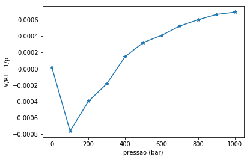
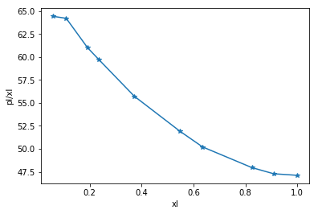
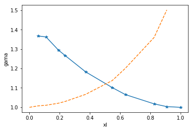
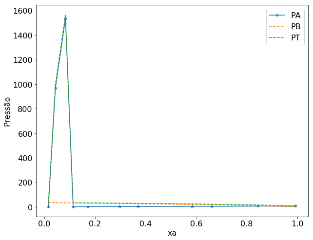

Misturas não ideais#
Em várias situações a aproximação do gás ideal ou solução ideal leva a erros consideráveis nos parâmetros desejados. Uma aproximação muito adotada é manter a forma funcional mais simples das propriedades desejadas e incluir uma correção no modelo ideal.
Mistura de Gases Reais#
Para o caso da mistura de gases reais, a grandeza que corrige a propriedades termodinâmicas é a fugacidade, f. Esta é considerada como uma pressão eficaz do gás.Ela é definida como:Onde \(f_i\) é fugacidade do gás i, \(p_i\) é a pressão parcial e \(\phi\) é o coeficiente de fugacidade. O coeficiente de fugacidade é obtido a partir da depedência do fator de compressibilidade em função da pressão, de acordo com a integral:
#Importação dos módulos necessários para resolução destes exercícios
import numpy as np
from scipy.integrate import simps #método de Simpson para integração numérica
import matplotlib.pyplot as plt
from scipy.optimize import fsolve #biblioteca para ajuste de modelos matemáticos
from scipy.optimize import curve_fit
---------------------------------------------------------------------------
ModuleNotFoundError Traceback (most recent call last)
Cell In[1], line 3
1 #Importação dos módulos necessários para resolução destes exercícios
----> 3 import numpy as np
4 from scipy.integrate import simps #método de Simpson para integração numérica
5 import matplotlib.pyplot as plt
ModuleNotFoundError: No module named 'numpy'
Exemplo 6#
Determine \( \phi\) e f para \(O_2(g)\) a 1000 bar e 0ºC a partir dos seguintes dados:
p(bar) |
1 |
100 |
200 |
300 |
400 |
500 |
600 |
700 |
800 |
900 |
1000 |
\(V_m\) (L/mol) |
22.710 |
0.2098 |
0.1045 |
0.0715 |
0.0601 |
0.0527 |
0.0471 |
0.0443 |
0.0420 |
0.0403 |
0.0.384 |
Solução#
Para gases reais: $ ln\phi = \int_{0}^{p} \frac{Z-1}{p} dp$\(Z = \frac{V_m}{V_{m,id}} = \frac{pV_m}{RT}\)
Substituindo a definição e Z na primeira equação:
\( ln\phi = \int_{0}^{p} (\frac{V_m}{RT} -\frac{1}{p})dp\)
A área sob o gráfico de \((\frac{V_m}{RT} -\frac{1}{p})\) versus p é exatamente a \(ln \phi\).
O jeito mais simples de resolver este problema é usando um método de integração numérica como a regra do trapézio ou regra e Simpson. Nestes casos não é necessário o ajuste de um polinômio aos dados do problema para posterior integração da função obtida.
R = 0.08314 # L bar / K mol
T = 273.15 # K
pi = 1000.0 # bar
p = np.array([1.,100., 200., 300., 400., 500., 600., 700., 800., 900., 1000.])
V = np.array([22.710, 0.2098, 0.1045, 0.0715, 0.0601, 0.0527, 0.0471, 0.0443, 0.0420, 0.0403, 0.0384])
ordenada = V/(R*T) - 1/p
ln_phi = simps(ordenada, p) # integração usando a regra de trapézio
phi = np.exp(ln_phi)
f = pi * phi
print('Coeficiente de fugacidade = ' + format(phi , '6.3f'))
print('Fugacidade (bar) = ' + format(f, '6.3e'))
Coeficiente de fugacidade = 1.161
Fugacidade (bar) = 1.161e+03
#vamos construir o gráfico só para ilustrar a forma dele.
plt.plot(p,ordenada,'-*')
plt.xlabel('pressão (bar)')
plt.ylabel('V/RT - 1/p')
plt.show
<function matplotlib.pyplot.show(*args, **kw)>

Exemplo 5#
Gillespie e Beattie (Phys. Rev. 36:743–753 (1930)) computaram o parâmetro \(K_{\phi}\) para síntese da amônia, representando o volume específico de vários gases pela equação de estado de Bettie-Bridgeman. Os resultados tem a seguinte forma:
Onde T e P são informados em K e atm, respectivamente. Levando em consideração os desvios da idealidade, repita o cálculo da conversão no equilíbrio.
Solução#
Em altas pressões o modelo do gás ideal não pode ser usado. Logo, a constante de equilíbrio deve ser escrita em termos das fugacidades dos gases:
A partir da nova constante de equilíbrio é possível calcular a conversão no equilíbrio usando o quadro que expressa o equilíbrio:
0.5\(N_2\) |
1.5\(H_2\) |
\(NH_3\) |
||
ini |
0.5 |
1.5 |
0 |
|
eq |
0.5-0.5x |
1.5-1.5x |
x |
|
x |
\( \frac{0.5-0.5x}{2.0-x}\) |
\( \frac{1.5-1.5x}{2.0-x}\) |
\( \frac{x}{2.0-x} \) |
\( K_x = \frac{\frac{x}{2.0-x}}{(\frac{0.5-0.5x}{2.0-x})^{0.5} \times (\frac{1.5-1.5x}{2.0-x})^{1.5}} \)
#Inicialização das variáveis
T = 273.15+400 #[K]
P = 150 #[atm]
P_bar = 150*1.01325
K_673 = 0.013
K_fi = (10**((0.1191849/T + 91.87212/T**2 + 25122730/T**4)*P))**(-1)
K = (K_673/K_fi)*P**(1.5+0.5-1)
def f(x):
return (x/(2-x))/(((0.5-0.5*x)/(2-x))**(0.5)*((1.5-1.5*x)/(2-x))**(1.5))- K
x = fsolve(f,0.5)
x_NH3 = x/(2-x)
print("A fração molar de amônia no equilíbrio é %0.2f"%(x_NH3))
A fração molar de amônia no equilíbrio é 0.33
Exemplo#
A tabela abaixo apresenta a pressão de vapor de misturas de iodoetano (I) e acetato de etila (A) a 50ºC. Calcule o coeficiente de atividade de ambos so componentes (a) com base na Lei de Raoult; (b) com base na Lei de Henry considerando o iodoetano como soluto.
xI |
0.0 |
0.0579 |
0.1095 |
0.1918 |
0.2353 |
pI (KPa) |
0.0 |
3.73 |
7.03 |
11.7 |
14.05 |
pA (KPa) |
37.38 |
35.48 |
33.64 |
30.85 |
29.44 |
xI |
0.3718 |
0.5478 |
0.6349 |
0.8253 |
0.9093 |
pI (KPa) |
20.72 |
28.44 |
31.88 |
39.58 |
43.0 |
pA (KPa) |
25.05 |
19.23 |
16.39 |
8.88 |
5.09 |
Solução#
#atkins 5.8
xI = np.array([0.0,0.0579,0.1095,0.1918,0.2353,0.3718,0.5478,0.6349,0.8253,0.9093,1.0])
pI = np.array([0.0,3.73,7.03,11.7,14.05,20.72,28.44,31.88,39.58,43.0,47.12])
pA = np.array([37.38,35.48,33.64,30.85,29.44,25.05,19.23,16.39,8.88,5.09,0])
pI_xI = pI/xI
plt.plot(xI,pI_xI,'-*')
plt.xlabel('xI')
plt.ylabel('pI/xI')
plt.show
/home/leobap/anaconda3/lib/python3.7/site-packages/ipykernel_launcher.py:10: RuntimeWarning: invalid value encountered in true_divide
# Remove the CWD from sys.path while we load stuff.
<function matplotlib.pyplot.show(*args, **kw)>

#a)
gama_I = pI/(xI*47.12)
print(gama_I)
gama_A = pA/((1-xI)*37.38)
print(gama_A)
[ nan 1.36717776 1.36249816 1.29458919 1.26721153 1.18270133
1.10179877 1.06563311 1.01779113 1.00358921 1. ]
[1. 1.00750523 1.01060808 1.0211676 1.02992931 1.06676928
1.13765199 1.20095801 1.35981793 1.50131284 nan]
/home/leobap/anaconda3/lib/python3.7/site-packages/ipykernel_launcher.py:2: RuntimeWarning: invalid value encountered in true_divide
/home/leobap/anaconda3/lib/python3.7/site-packages/ipykernel_launcher.py:5: RuntimeWarning: invalid value encountered in true_divide
"""
plt.plot(xI,gama_I,'-*')
plt.plot(xI,gama_A,'--')
plt.xlabel('xI')
plt.ylabel('gama')
plt.show
<function matplotlib.pyplot.show(*args, **kw)>

#b)
x=xI[:2]
p=pI[:2]
def henry(x):
return K*x
popt, pcov = curve_fit(henry, x, p)
---------------------------------------------------------------------------
ValueError Traceback (most recent call last)
<ipython-input-11-409987d230b4> in <module>()
8 return K*x
9
---> 10 popt, pcov = curve_fit(henry, x, p)
~/anaconda3/lib/python3.7/site-packages/scipy/optimize/minpack.py in curve_fit(f, xdata, ydata, p0, sigma, absolute_sigma, check_finite, bounds, method, jac, **kwargs)
685 args, varargs, varkw, defaults = _getargspec(f)
686 if len(args) < 2:
--> 687 raise ValueError("Unable to determine number of fit parameters.")
688 n = len(args) - 1
689 else:
ValueError: Unable to determine number of fit parameters.
Exemplo#
Faça um gráfico a partir dos dados de pressão de vapor de uma mistura de benzeno (B) ácido acético (A) e construa a curva de pressão de vapor/composição para a mistura a 50 ºC. Confirme que a Lei de Henry e Lei de Raoult são obedecidas nos limites apropriados. Calcule as atividadese coeficientes de atividade com base na Lei de Raoult, e posteriormente, considerando B como soluto, ssua atividade e coeficiente de atividade com base na Lei de Henry. Por último, calcule a energia de Gibbs de excesso no intervalo de composições dado no problema.xA |
0.0160 |
0.0439 |
0.08355 |
0.1138 |
0.1714 |
pA (KPa) |
0.484 |
0.967 |
1.535 |
1.89 |
2.45 |
pB (KPa) |
35.05 |
34.24 |
33.28 |
32.64 |
30.90 |
xA |
0.2973 |
0.3696 |
0.5834 |
0.6604 |
0.8437 |
pA (KPa) |
3.31 |
3.83 |
4.84 |
5.36 |
6.76 |
pB (KPa) |
28.16 |
26.08 |
20.42 |
18.01 |
10.0 |
# atkins 5.9
xA = np.array([0.016,0.0439,0.0835,0.1138,0.1714,0.2973,0.3696,0.5834,0.6604,0.8437,0.9931])
PA = np.array([0.484,967,1535,1.89,2.45,3.31,3.83,4.84,5.36,6.76,7.29])
PB = np.array([35.05,34.29,33.28,32.64,30.9,28.16,26.08,20.42,18.01,10,0.47])
pT = PA + PB
# Criando os gráficos
# estes dois parâmetros precisam aparecer antes da definição do plot
plt.rcParams.update({'font.size': 16}) #define o tamanho da fonte
plt.figure(figsize=(10,8)) #define as dimensões do gráfico
plt.plot(xA,PA,'-*',label='PA')
plt.plot(xA,PB,'--', label='PB')
plt.plot(xA,pT,'--', label='PT')
plt.xlabel('xa')
plt.ylabel('Pressão')
plt.legend(loc='best')
plt.show
<function matplotlib.pyplot.show(*args, **kw)>
